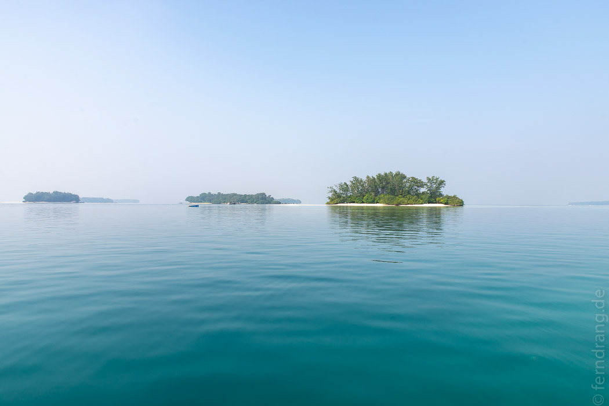
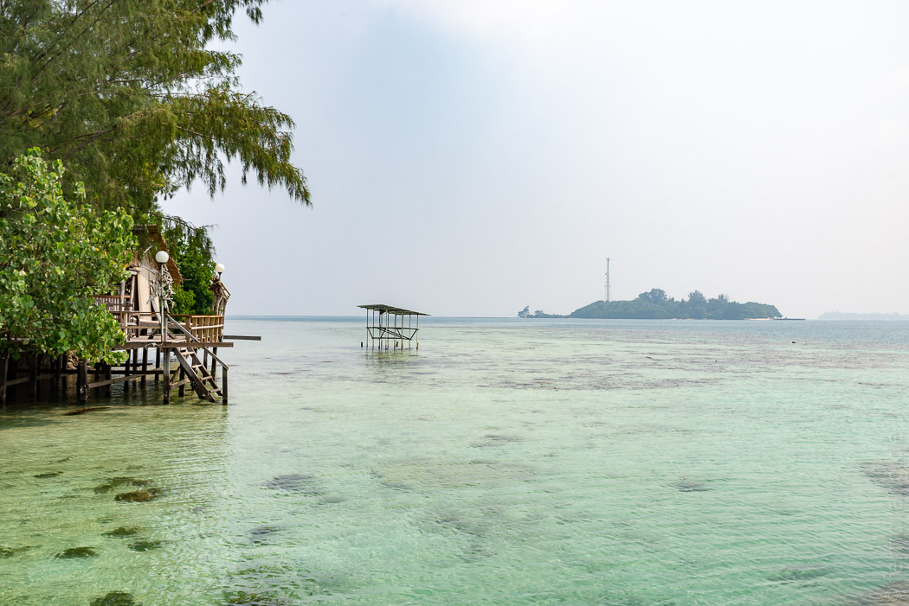
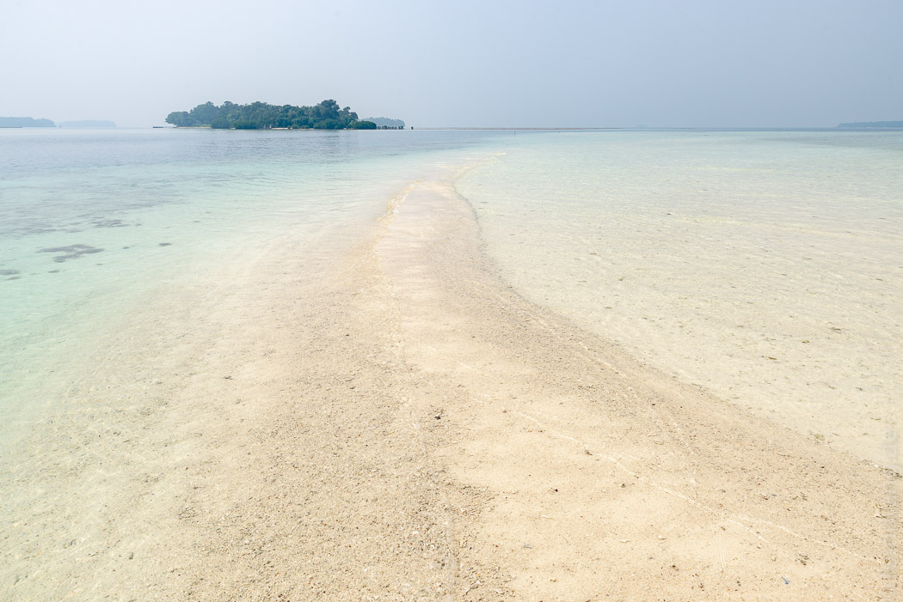

Um den Erholungsaspekt des Urlaubs von vornherein nicht zu vernachlässigen, haben wir einen Ausflug zu den Thousand Islands unternommen, die nördlich von Jakarta in der Javasee liegen. Eigentlich sind es nicht annähernd 1000, aber ein paar Hundert kleine Inselchen sind es schon. Von der Marina Ancol, einem gut organisierten Bootssteg in einer erwartungsgemäß tristen „Freizeitanlage“ am verbauten Ufer Jakartas, dauert die Überfahrt mehr als zwei Stunden. Aber die See ist ruhig und die fünf 200 PS Außenborder haben uns schnell außer Sichtweite der Megastadt gebracht. Schon bald flogen die ersten Eilande an uns vorbei. Die meisten sind keine 100m lang und bestehen nur aus Bäumen. Einige wenige etwas größere, von weitem an den Handymasten zu erkennen, beherbergen kleine Dörfer.
Unser Ziel war Pulau Macan. Dort gibt es nur wenige Hütten, die sich das Inselchen mit einem Waran teilen. Eine Umrundung über die stets frisch gerechten Trampelpfade dauert keine fünf Minuten. Ringsum liegt ein dutzend weiterer schwimmender Wäldchen in Sichtweite. Unser „Zimmer“ ist eigentlich nur ein Holzgerüst, einen Meter über Wasser, das zum Meer hin offen ist und zu den restlichen Seiten mit Tüchern etwas Privatsphäre bietet. Wir hatten einen wunderbaren Blick über das knietiefe Wasser der Lagune.
Eine unbewohnte, noch kleinere Nachbarinsel gehört zum Hotel dazu. Durch die seichte Lagune kann man sogar zu Fuß hinüber gehen. Die Unmengen von Seeigeln versuchen allerdings das zu verhindern. Wir sind auf einem Surfbrett hinüber gepaddelt. An den abfallenden Rändern der Untiefe gab es schöne Korallen und viele Fische zu sehen. Mit Schnorcheln, Paddeln und Sonnen haben wir unsere zwei Tage auf den Mini-Malediven sehr entspannt verbracht.
Auf dem Rückweg nach Jakarta konnten wir schon weitem eine dicke schwarze Rauchsäule über der Stadt sehen. Es gab wohl einen Fabrikunfall. Was wiederum zu einem richtig fiesen Stau geführt hat. Wir haben in den mehr als zwei Stunden im Taxi zum Flughafen mehr Erholung eingebüßt, als wir auf der Insel ansammeln konnten. Später haben wir den Taxifahrer nach Anleitung von Google Maps durch irgendwelche Seitenstraßen gescheucht und es noch knapp zu unserem Flug geschafft. Der arme Fahrer wird vermutlich den Beruf wechseln wollen.